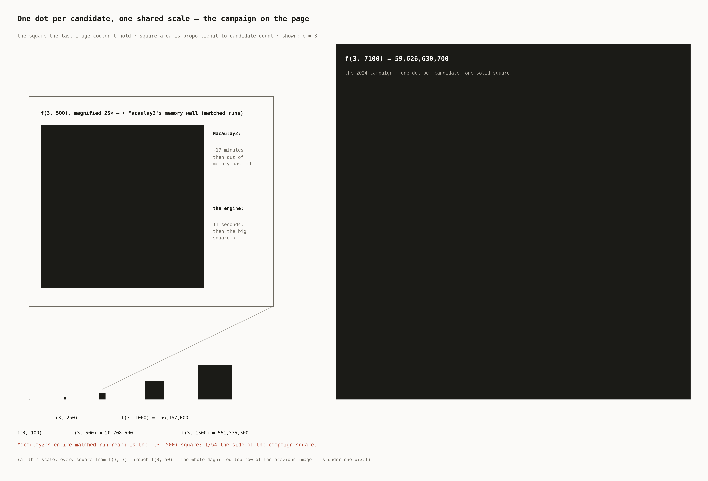
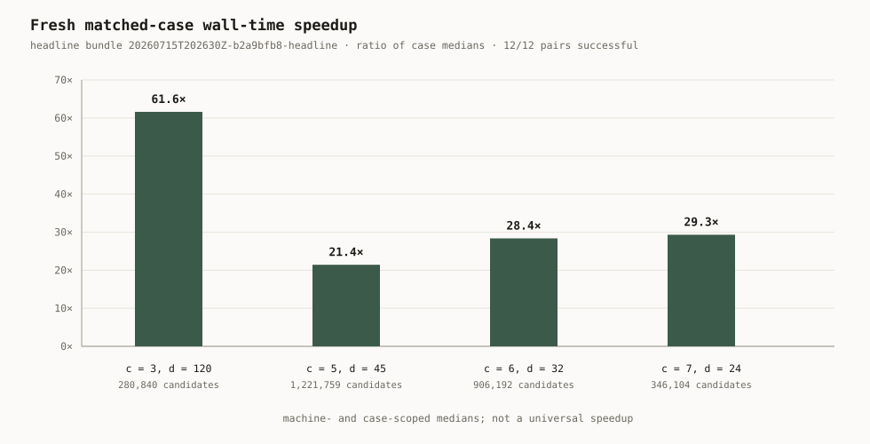
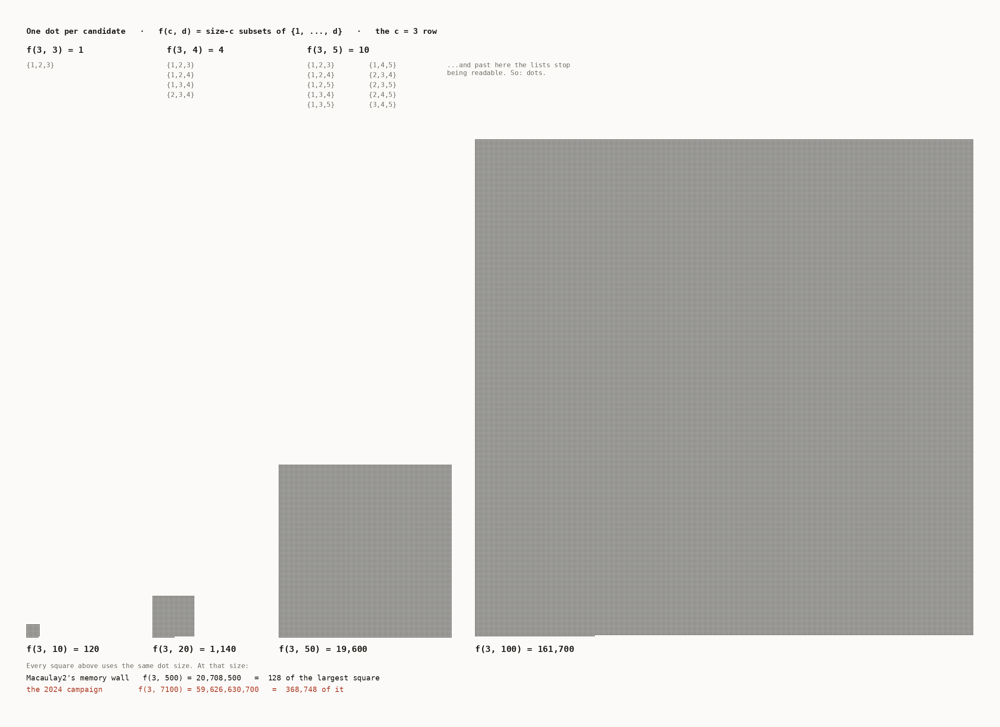
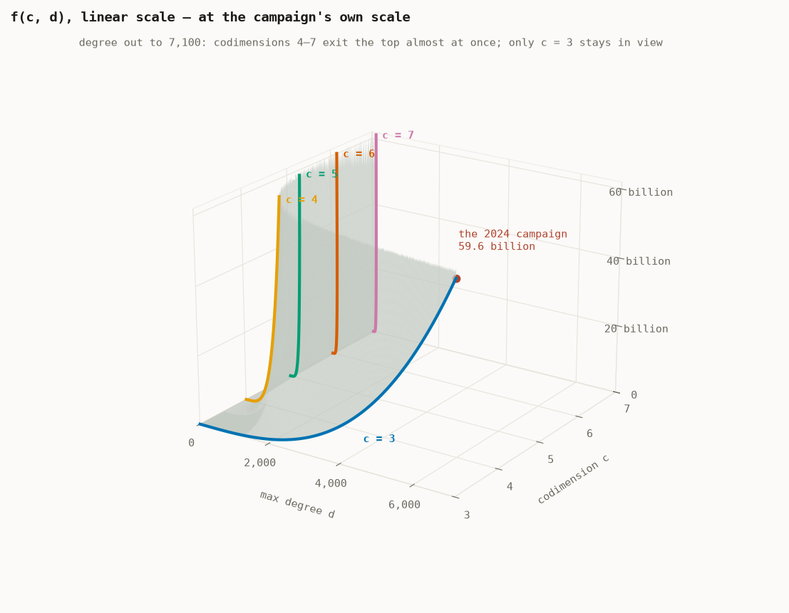
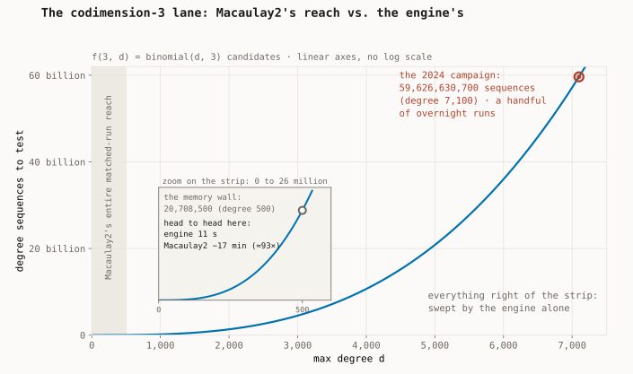
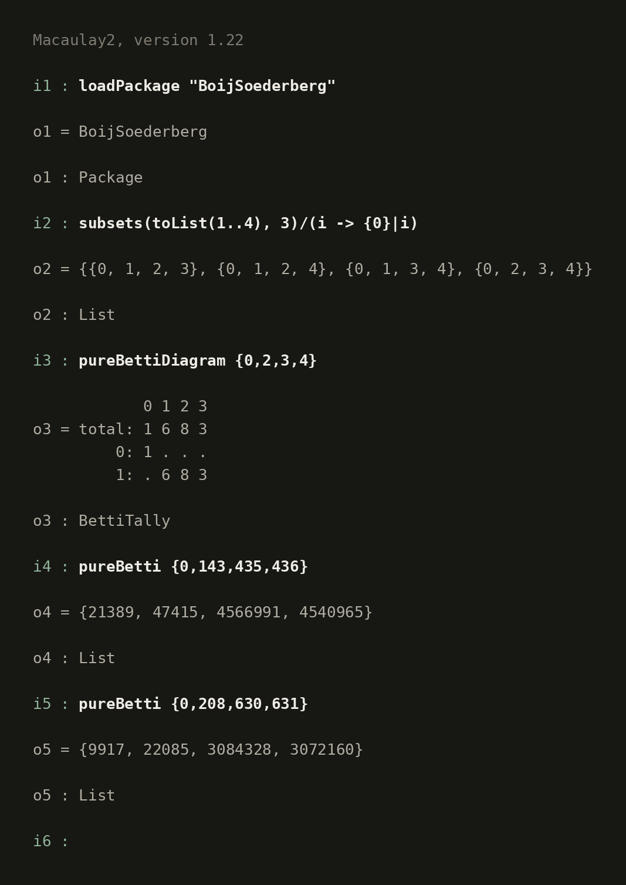
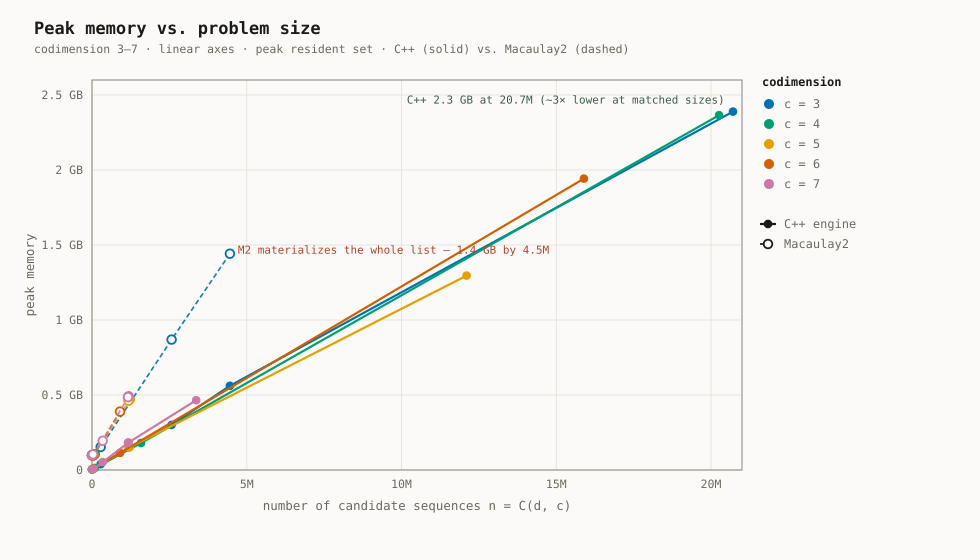

Finding the rare structures that break a rule.
A proposed rule in Boij–Söderberg theory can fail on structures so rare that only an exhaustive search finds them, and the standard tool couldn’t reach the ranges that mattered. I hand-wrote a ~1,200-line C++ engine that could. Its search surfaced the counterexamples behind one of the preprint’s three main theorems.

Tens of billions of candidates, for a handful that matter.
Each candidate is a subset, its degree sequence and one Betti table to test against the conjecture. Macaulay2’s BoijSoederberg package is the standard tool, but within the same time and memory it could not reach the candidate ranges where the interesting cases live. The engine represents the structures compactly, enumerates degree sequences in resumable slices, and checks the conjectures with arithmetic that avoids large intermediate products on a 64-bit processor.
- 70–115× faster.On matched searches across codimensions 3–7: 20.7 million candidates in 11 seconds, versus about 17 minutes.
- 59.6 billion swept.The 2024 campaign ran tens of billions of sequences in a handful of overnight runs.
- A Pell family.Early searches found counterexamples following Pell’s equation, an infinite family later proved by number theory.
- Exactly four.Under a fixed size bound the search found four cases; the published proof checks more than a dozen by hand. The counterexample pattern became one of the preprint’s three main theorems.
Same machine, same families, same checks.
Task-matched runs against an equivalent Macaulay2 implementation, measured as program CPU time. Past 20 million candidates Macaulay2 hits the materialize-the-whole-list wall, and on lighter hardware it runs out of memory.


How little of it the standard tool could reach.
Candidate count grows explosively with degree and codimension. Drawn honestly, everything Macaulay2 reached is a sliver at the left edge of the chart.



Notes to self, left in.
The core represents the algebraic structures, enumerates candidate degree sequences, and checks the conjectures. Here is the middle of one routine, verbatim from src/test_funcs.cc: the comments work out, then reject, a way to distribute the lcm across denominators. The implementation instead accumulates each denominator factor by factor and stops once the target is reached.
//at this point all the fractions are reduced as much as possible, so L will be the lcm of all of them
//question is, if we have (a*b) and (c*d), is lcm((a*b),(c*d)) the same as lcm(lcm(a,c),lcm(b,d))?
//if so, this is good, since we can check L before multiplying out any one denominator, as any given denominator can be very big once fully multiplied out, but if we can go
//factor by factor for each one, we will have a much, much easier time
//...
//start L calc
int L = 1; //"global" L, lcm of all interim L's
int target = binom(c,c/2);
int warning_val = INT_MAX; //lol sqrt(LLONG_MAX) is just INT_MAX... duh, sqrt(2^64) = sqrt(2^32*2) = sqrt((2^32)^2) = 2^32
if(target > warning_val) cout << "In function test_conjs_v2, target val for L greater than sqrt(LLONG_MAX), overflow likely.\n";
//each denom will have c-1 factors, each of which may or may not be 1
//need to go term by term in each denominator. remember each denominator is .second in a pair, and a vector of pairs makes up a whole pi_i
//CANNOT DO THIS. L MUST BE LCM OF ALL DENOMS, BUT WITHIN A DENOM L MUST BE AT LEAST THE ENTIRE PRODUCT OF THAT DENOM
//What this means is in any one denom, we can check if L would ever be made too big, but if not, L has to become the entire product
vector<int> L_vec(c+1);
L_vec.at(0) = 1; //since pi_0 is just 1/1
int curr_L = 1;
//need to calc an L for each denom, checking at every step, then do lcm of all the L's, again checking at every step
for(int i=1; i<=c; i++){ //for each pi (starting at 1 since pi_0 is just 1/1)
curr_L = 1; //reset curr L
for(int j=0; j<c-1; j++){ //for each factor of the denom
curr_L = curr_L *= pis.at(i).at(j).second;
//each lcm can only make L bigger, so I can actually check intermediately
if(curr_L >= target){
cerr << "An interim L hit " << curr_L << " which is > binom(c,c/2); both conjs autopass.\n";
return true;
}
//curr_L is not too big, push to L vec
L_vec.at(i) = curr_L;
}
// cerr << "After pi_" << i << ", curr L is now " << L << endl;
} The objects, the ownership, the limits.
The objects in Macaulay2
Degree sequences, one pure Betti table, and Betti numbers already in the millions by three-digit degrees. The session below is the BoijSoederberg package on the same inputs the engine enumerates.

Peak memory

Ownership
I hand-wrote the ~1,200-line C++ core in 2024 as a research assistant under Dr. Adam Boocher (BURST grant, University of San Diego) and cross-validated it against Macaulay2. Coding agents later added supporting documentation and the test and benchmark harnesses. The engine surfaced counterexamples for the preprint; it did not establish the proofs, which are the preprint’s. I received the mathematics department’s award for outstanding research in mathematics for this work.
The preprint
Boocher, Huang, Wolf. Arithmetic in the Boij–Söderberg Cone. arXiv:2512.24320 (Dec 2025). The engine’s role was exploratory: its exhaustive search found the pattern; the proof was established separately.